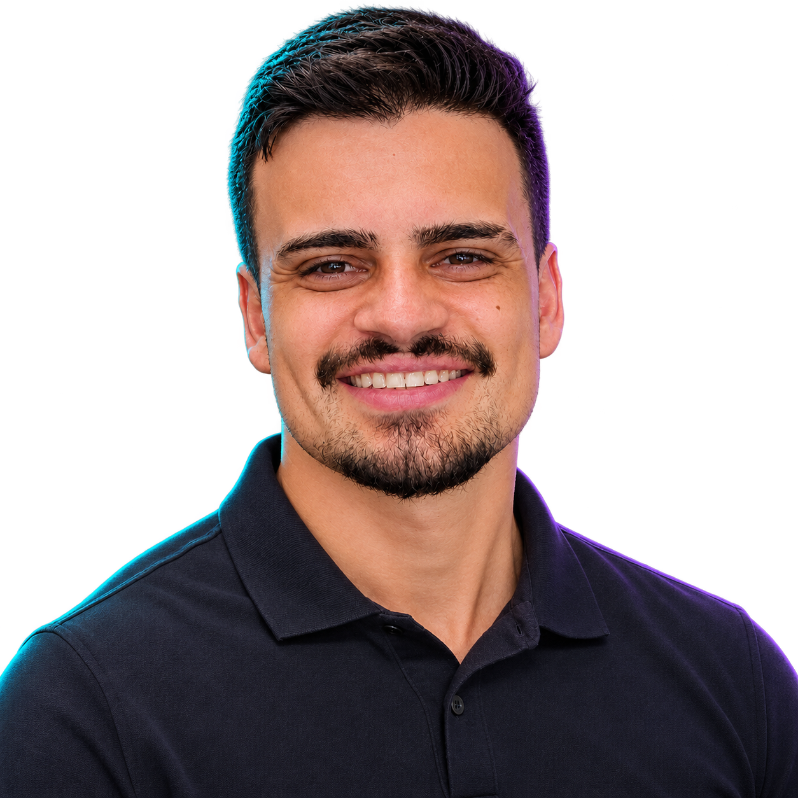

Sites e presença digital
Sites institucionais e portfólios para apresentar serviços, organizar informações e facilitar o contato com os clientes.
Por trás das soluções
Sou desenvolvedor de soluções digitais para empresas que querem crescer com mais presença, organização e tecnologia.

TECNOLOGIA COM PROPÓSITO
Crio sites profissionais, sistemas personalizados, aplicativos e automações pensados para resolver necessidades reais do negócio. Meu foco é transformar ideias em experiências digitais claras, modernas e funcionais — sempre com atenção aos detalhes e aos resultados.
Cada projeto é desenvolvido de forma personalizada, entendendo o objetivo de cada cliente e buscando soluções práticas que gerem valor no dia a dia.
O QUE EU DESENVOLVO
Sites institucionais e portfólios para apresentar serviços, organizar informações e facilitar o contato com os clientes.
Ferramentas personalizadas para organizar dados, acompanhar atividades e tornar os processos mais simples.
Soluções para conectar tarefas e reduzir atividades repetitivas, com foco no que faz sentido para cada operação.
COMO EU TRABALHO
Conversamos sobre sua ideia, seu público e o problema que precisa ser resolvido.
Definimos as prioridades, as funcionalidades e o caminho do projeto.
Transformo o planejamento em uma experiência funcional, com atenção ao visual e à usabilidade.
Conferimos os detalhes e ajustamos a solução antes de colocá-la em uso.
Meu compromisso é entender o que você precisa e construir algo que seja útil para o seu negócio.
VAMOS CONVERSAR
Conte um pouco sobre seu projeto e o que você espera alcançar.